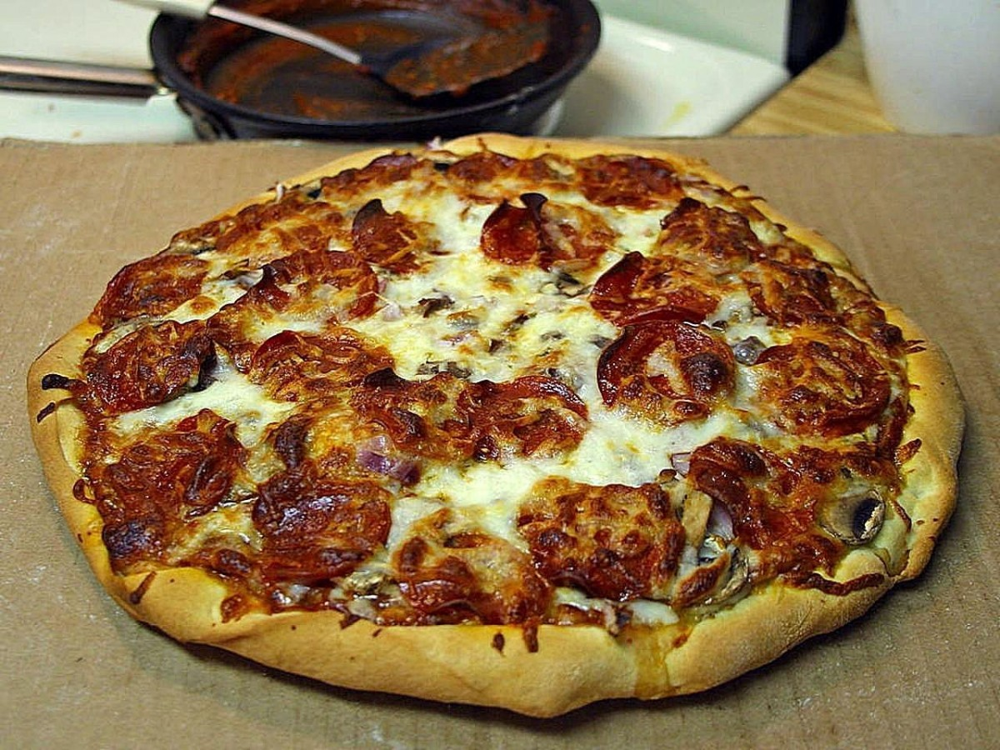

This Mexican pizza recipe layers delicious seasoned ground beef and refried beans
between two crisp tortillas. Top with salsa, cheese, tomatoes, and jalapeño for
incredible flavor in every bite!
-
1/2 pound ground beef
-
1 medium onion, diced
-
1 clove garlic, minced
-
1 tablespoon chili powder
-
1 teaspoon ground cumin
-
1/2 teaspoon paprika
-
1/2 teaspoon salt
-
1/2 teaspoon black pepper
-
1 (16 ounce) can refried beans
-
4 (10 inch) flour tortillas
-
1/2 cup salsa
-
1 cup shredded Cheddar cheese
-
1 cup shredded Monterey Jack cheese
-
2 green onions, chopped
-
2 tomatoes, diced
-
1/4 cup thinly sliced jalapeño pepper
-
1/4 cup sour cream (Optional)
-
Preheat the oven to 350 degrees F (175 degrees C). Coat 2 pie plates with
non-stick cooking spray.
-
Place ground beef, onion, and garlic in a skillet over medium heat. Cook
until beef is evenly browned and crumbly, 5 to 7 minutes. Drain and discard grease.
Season beef with chili powder, cumin, paprika, salt, and pepper.
-
Lay one tortilla in each pie plate, and cover with a layer of refried beans. Spread
1/2 of the seasoned ground beef over each one, and then cover with a second tortilla.
Bake in the preheated oven until tortillas are crisp, about 10 minutes.
- Remove pizzas from the oven and set aside to cool slightly. Then spread 1/2 of the
salsa over each top tortilla. Cover each pizza with 1/2 of the Cheddar and Monterey
Jack cheeses. Place 1/2 of the tomatoes, 1/2 of the green onions, and 1/2 of the jalapeño
slices onto each one.
- Return pizzas to the oven and bake until cheese is melted, about 5 to 10 more minutes.
Let pizzas cool slightly before slicing each one into 4 pieces.
Go to home page